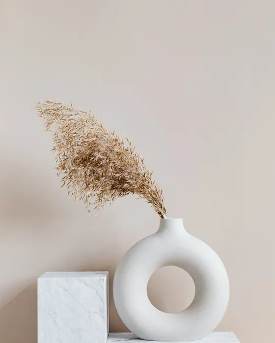
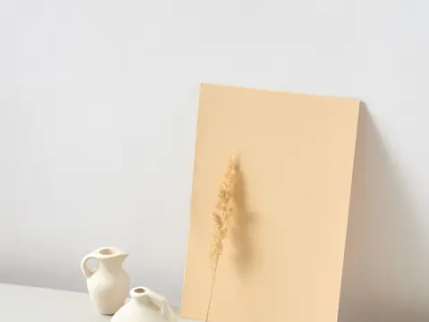

Magnetic pill
ButtonsThe fill enters from the side your cursor came in, so the button reads as answering you, not just changing colour.
Vol. 0116 componentsPlain HTML, CSS, JS
The bits of an interface people touch a hundred times a day. Each one here is live: press it, drag it, tab to it. Under each, one line on why it moves the way it does.
Try themThe fill enters from the side your cursor came in, so the button reads as answering you, not just changing colour.
Three strokes fold into a cross on one shared curve; the panel staggers in after the icon commits, never before.
Billed monthly. Cancel any time.
The indicator travels and stretches between options, so the eye follows the change instead of hunting for it.
Notifications on
A real spring (stiffness 520, damping 26) gives the knob one small overshoot. Enough to feel physical, not bouncy.
Fieldnote tote Concept
Waxed canvas, 14 litres
One button, three honest states: idle, working, done. The width animates so the label never jumps.
Native input underneath, so arrow keys, Page Up and screen readers work. The bubble only adds the number your thumb hides.
The check draws itself in 320 ms, then the chip waits two seconds before it resets. Long enough to trust, short enough to reuse.
Six digits. You can paste the whole code.
Auto-advances, accepts a pasted code, and Backspace walks back. Six boxes, one label for assistive tech.
Photo: John Callery, Pexels. The grade is CSS, applied live.
Same photograph, two grades. Drag, click or use arrow keys; the handle snaps to keyboard steps of five per cent.
128 saves
Eight SVG sparks, each on its own angle and delay. The burst plays once on save, never on unsave.
Toasts stack with depth, fan out when you hover or focus them, and pause their timer while you read.
Press Space to lift, arrow keys to move, Space again to drop.
10 working days, in the order you set.
Pointer drag with FLIP motion, plus Space to lift and arrows to move for keyboard users. Each move is announced.

Photo: Karolina Grabowska (Kaboompics), Pexels.
The highlight moves opposite to the tilt, the way light sits on a glazed surface. Capped at eight degrees.

Journal · 4 min
Notes from a week in the studio with a fictional ceramics label.
Photo: DS stories, Pexels.
The skeleton matches the final layout box for box, so nothing shifts when the content lands.
Reading mode
“Make the quiet parts as careful as the loud ones.”
A circular wipe from the switch itself. Scoped to this card only: the page around it stays paper.
Press Ctrl K anywhere on this page.
Ctrl or Cmd K from anywhere on the page. Fuzzy match ranks consecutive letters higher, so “tst” finds Toast stack first.
Every component works without a mouse. Tab moves between them, arrow keys move inside radio groups, sliders and the reorder list, and Escape closes what opened.
A two-pixel copper ring with an offset, so focus never hides behind a shadow or a fill. It shows for keyboard users only.
Switches are switches, radios are radios, the comparison handle is a slider with a spoken value. Changes are announced in live regions.
With reduced motion set on your device, springs settle instantly, bursts and wipes are skipped, and every state is still shown.
↑↓ moveEnter jump